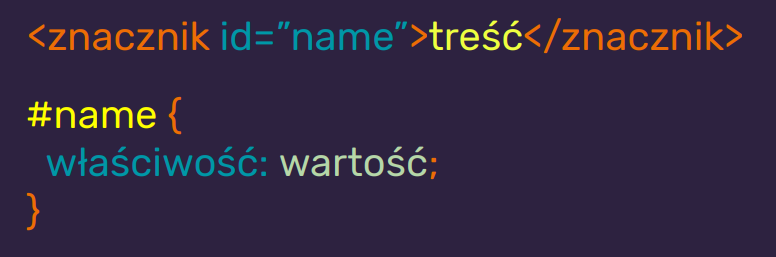

CSS = Cascading Style Sheets
CSS odpowiadają za prezentację
| JAVASCRIPT |
| CSS |
| HTML |
| Treść |
CSS wpływają na wygląd elementów HTML i treści na ekranie, wydrukach itp.
Składnia CSS to reguły
Budowa reguły CSS
<style>
W nim wpisujemy
reguły
Podpięcie zewnętrznego pliku CSS do HTML
.(kropka) - znacznik klasy
#(hash) - znacznik identyfikatora
!important
Nadpisuje
wszystkie selektory i jest niezmienny
Specyficzność selektorów w CSS
Jeśli specyficzność jest równa - pierwszeństwo ma selektor "bliżej" elementu
Nazewnictwo klas
- Używaj pojedynczych słów z j. angielskiego
- Nazywaj rzeczy zgodnie z ich funkcją na stronie
- Wtartuj z małej litery np. header nie Header
- Nie zaczynaj od cyfry
- Jeśli musisz użyć dwóch słów użyj tzw. kebab case np. news-listing
- Staraj się, żeby element miał jedną klasę (nie zwiększaj specyficzności bez potrzeby)